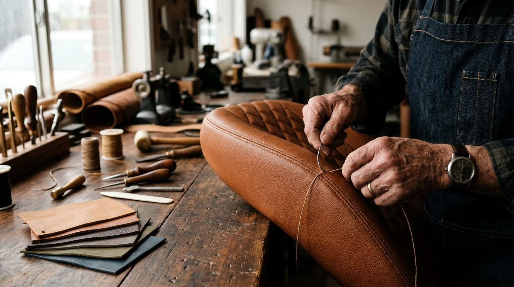
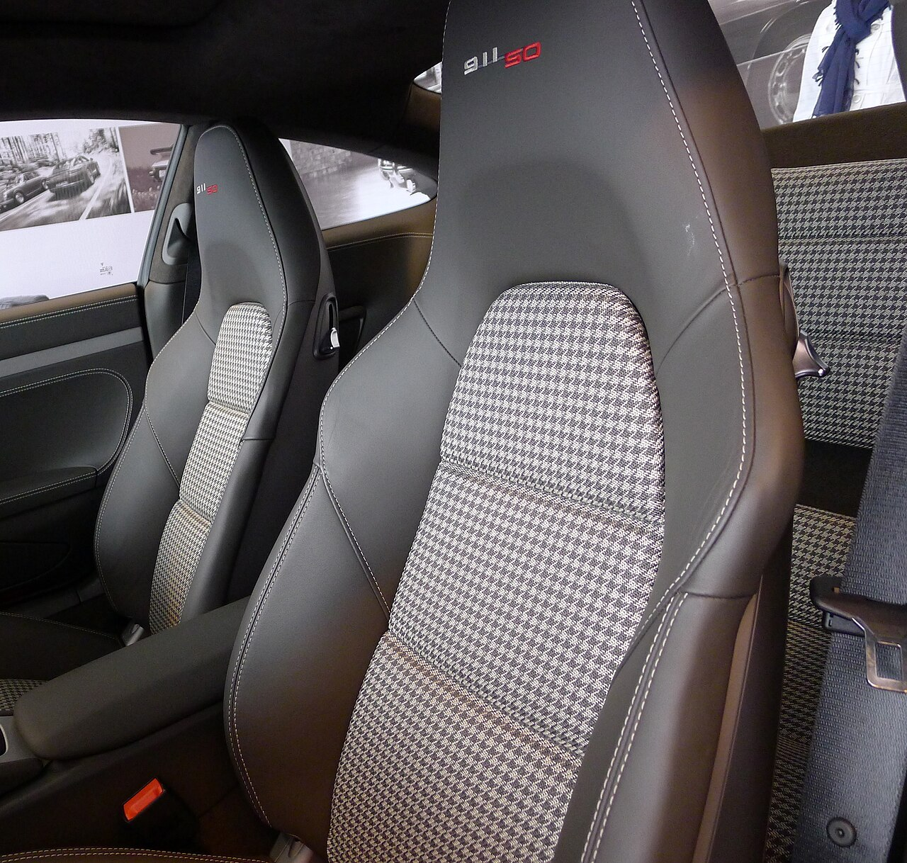
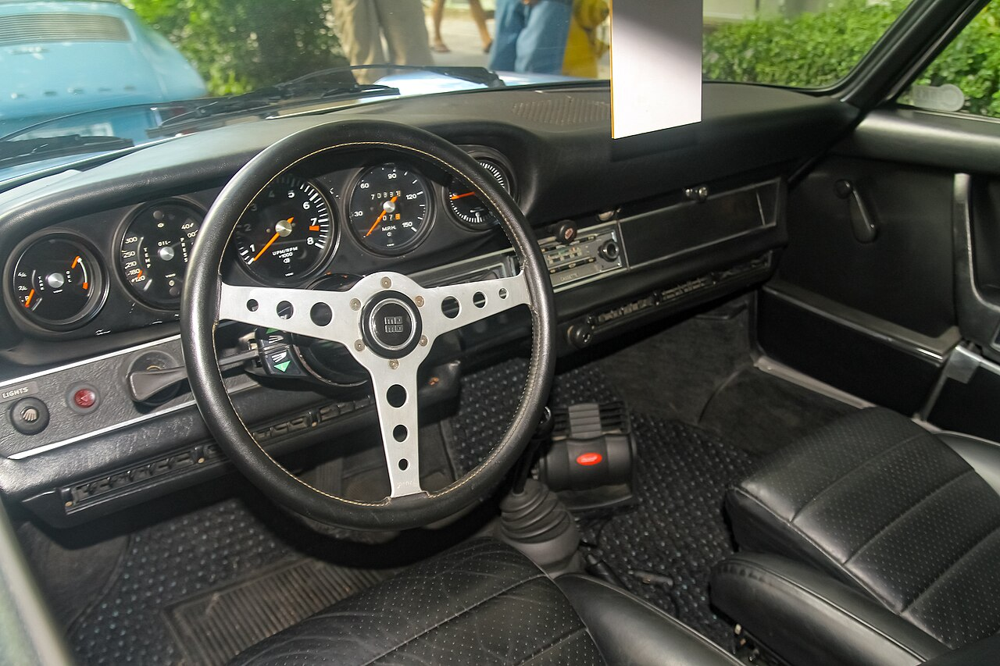
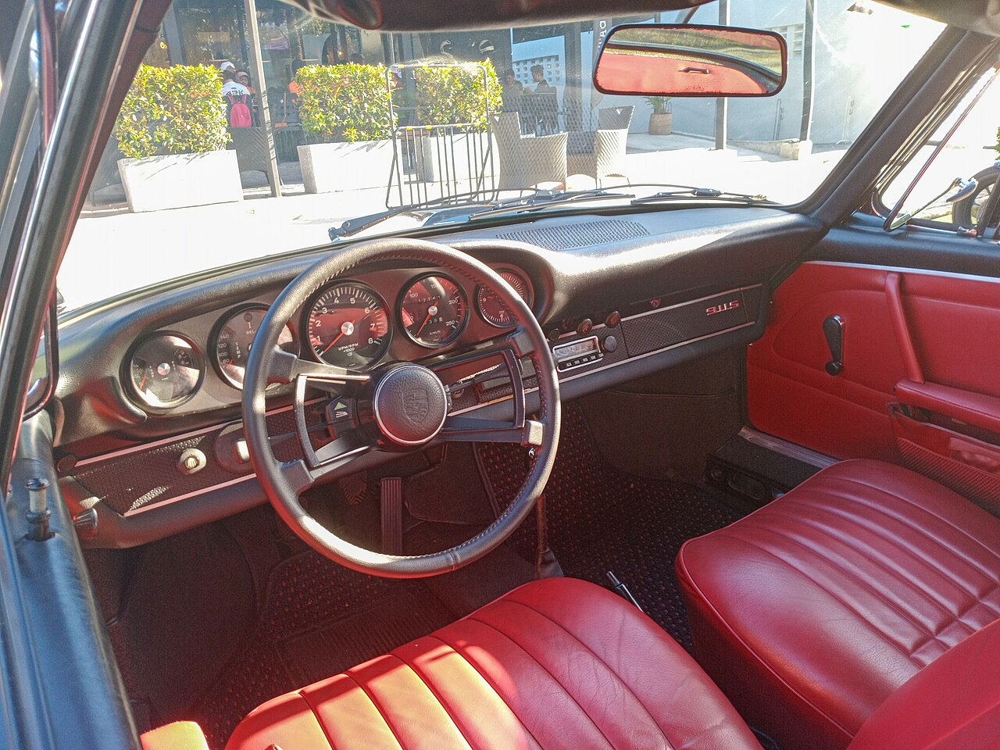

Crafting Comfort. Defining Automotive Luxury.
Founded by master saddlers and automotive engineers, CAVALON transforms factory cabins into bespoke rolling sanctuaries built around your driving posture and personal aesthetic.

From Bespoke Saddlery to Modern Cabins
CAVALON began with a simple observation: drivers spend hundreds of hours inside their vehicles, yet factory interiors rarely reflect personal taste or long-distance ergonomics.
Today, our atelier combines 3D digital seat scanning with old-world hand-piped upholstery—delivering custom interiors across hatchbacks, executive sedans, rugged SUVs, and exotic grand tourers.
Five Pillars Behind Every Stitch
Quality
Automotive-certified hides and UV-stabilized threads tested for extreme cabin heat.
Innovation
Laser-mapped seat templates and airbag-safe breakaway seam engineering.
Comfort
Multi-density memory foam bolstering tailored to reduce highway fatigue.
Customization
Bespoke two-tone palettes, diamond quilting, and custom embroidery.
Satisfaction
Transparent consultations, punctual delivery, and dedicated aftercare.
Five-Stage Artisan Workflow
1. Material Selection
Inspecting every hide and fabric roll for uniform grain, thickness, and color fastness.
2. Precision Stitching
Computer-guided diamond quilting paired with hand-turned French seam piping.
3. Custom Fitting
Model-specific patterning that hugs every bolster, headrest, and split-folding armrest.
4. Professional Installation
Hog-ring tensioned mounting in our dust-controlled studio bays.
5. Quality Inspection
Final steam-contouring, seam audit, and sensor/airbag verification before handover.


OEM-Grade Safety Meets Atelier Artistry
From preserving ventilated seat airflow and side-impact airbags to backing every seam with a 3-year craftsmanship warranty, CAVALON puts your safety and long-term pride of ownership first.
- ✓ 3-Year Seam, Fitment & Peeling Warranty
- ✓ Zero-Damage Reversible Installation
- ✓ Dedicated Design Advisor From Quote to Handover